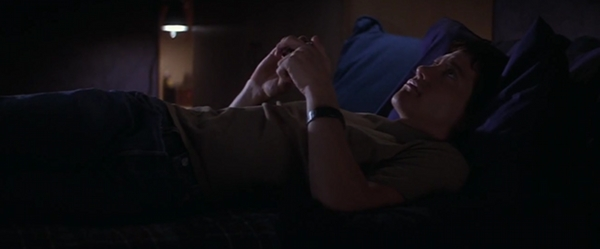
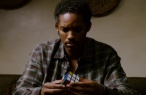
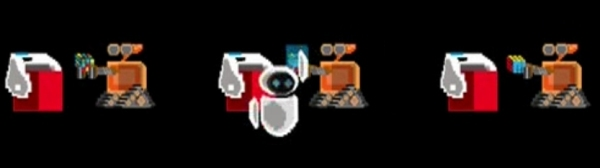

As a devotee of both Rubik's cubes and movies, I like it when a Rubik's cube appears in a feature movie. To keep a bit track of them, I started this list. If you have any suggestions, do not hesitate to
email them to me
or
@ them to me on Twitter
Armageddon
A 1998 disaster/science fiction-action film directed by Michael Bay.
IMDbWikipedia
Rockhound holding a solved Rubik's cube.
Copyright Touchstone Pictures, 1998
Appearance
In an interview, a few main characters are asked to solve a Rubik's cube. Rockhound
(Steve Buscemi)
solves a Rubik's cube. We only see him solve the final move.
Quotes
Piece of cake.
Rockhound
(After solving the Rubik's cube.)
Being John Malkovich
A 1999 American comedy-fantasy film written by Charlie Kaufman and directed by Spike Jonze. It stars John Cusack, Cameron Diaz, Catherine Keener, and John Malkovich, who plays a fictional version of himself.
IMDbWikipedia
Charlie fiddling around with a Rubik's Cube
Copyright Gramercy Pictures, Propaganda Films and Single Cell Pictures, 1999
Appearance
Charlie
(Charlie Sheen, as himself)
just fiddles around a bit with a Rubik's Cube for a few seconds.
Comments
A cubers habit is to toy around with Cubes while not solving them. Charlie throws up the Cube while it spins in the air, and then catches it.
Donnie Darko
A 2001 American psychological thriller film written and directed by Richard Kelly and starring Jake Gyllenhaal.
IMDbWikipedia

Donnie Darko, playing with a Rubik's cube while lying in bed.
Copyright Flower Films, 2001
Appearance
While Donnie
(Jake Gyllenhaal)
is lying down in bed, thinking, he is playing with a Rubik's cube.
Comments
The Rubik's cube is a black and white one, quite possibly with M.C. Escher paintings on each side of the cube, instead of the regular white-blue-red-green-orange-yellow ones.
Drive
Drive is a 2011 American action film directed by Danish director Nicolas Winding Refn, starring Ryan Gosling, Carey Mulligan, Bryan Cranston, and Albert Brooks.
IMDbWikipedia
Rubik's cube on a table where Irene is standing next to her son.
Bold Films, 2011
Appearance
The cube is just lying on a table while the protagonists talk.
Dude, Where's My Car?
A 2000 comedy film directed by Danny Leiner.
IMDbWikipedia
Chester just found the cube.
Copyright Alcon Entertainment, 2000
Appearance
Two groups of aliens and a group of space-wannabe-nerds are searching for a
Continuum Transfunctioner
For some reason they think Jesse
(Ashton Kutcher)
and Chester
(Seann William Scott)
have this device that can destroy the planet. The Rubik's cube appears in the movie after a while, and turns out to be the
Continuum Transfunctioner
at the end of the movie.
Comments
On the images you can see that white is next to yellow on their cube. Usually, white is apposite yellow on the cube.
Quotes
Cool!
Chester
(After finding the Rubik's cube in his pocket.)
Dude, you're never gonna figure that thing out.
Jesse
(When Chester is trying to solve the cube.)
Composition of four screencaps where the Rubik's cube transforms in a Continuum Transfunctioner.
Copyright Alcon Entertainment, 2000
Transcript
Chester
Look dude, I almost got it!
Jesse
Dude, you're really starting to urge me with your Rubik's cube!
Duplicity
A 2009 romantic comedy spy-thriller film directed by Tony Gilroy.
IMDbWikipedia
Ray with the Rubik's cube keychain.
Copyright Laura Bickford Productions
Appearance
The Rubik's cube appears in one scene, where Ray
(Clive Owen)
holds a Rubik's cube keychain in his hand to allow Claire
(Julia Robberts)
to recognise him. Later in the scene Claire has a similar cube in her handbag. The keychain is also seen in the trailer.
Enter the Void
A 2009 psychedelic melodrama written and directed by Gaspar Noé.
IMDbWikipedia
A Rubik's cube laying on a gramaphone record player.
Copyright Fidélité Films, 2009
Appearance
A Rubik's cube can be seen shortly when protagonist Oscar
(Nathaniel Brown)
grabs a book. The cube lays on a gramaphone record player. The cube is also seen in the trailer.
Hævnen
Danish, "In a Better World"
A 2010 Danish drama film directed by Susanne Bier and written by Anders Thomas Jensen.
IMDbWikipedia
Elias playing with a Rubik's cube in a classroom.
Copyright Danmarks Radio, 2010
Appearance
In a classroom we see Elias
(Markus Rygaard)
playing with a Rubik's cube. It is shown shortly, and we don't know if Elias was able to solve the cube.
Hellboy
A 2004 supernatural action-thriller film directed by Guillermo del Toro.
IMDbWikipedia
Abe Sapien complaining about his inability to solve the Rubik's Cube.
Copyright Revolution Studios, 2004
Appearance
A merman-like creature called Abe Sapien
(Doug Jones)
is recovering in his aquarium and tries to solve a Rubik's Cube. He talks with Liz Sherman
(Selma Blair)
and complains about his inability to solve the Rubik's Cube.
Comments
Frankly, Abe is not able to solve the Rubik's cube. Earlier in the movie he is introduced as an intelligent creature with psychometric abilities.
Abe states that it took him
three decades
to solve two sides. The movie was released in 2004. If we suppose the movie does not take place in the future, that means he already had the cube in 1974. 1974 was the year the Rubik's cube was invented by Ernő Rubik. However, the Rubik's cube was released six years later in 1980 by Ideal Toys.
Almost all scenes in the sequel,
Hellboy II: The Golden Army
were shot in Hungary. Hungary is the homeland of the Rubik's cube. Ernő Rubik was born and lived in Budapest, the capital city of Hungary.
Hellboy
itself was shot in the Czech Republic.
Quote
Listen, I'm not much of a problem solver. Three decades… and I've only completed two sides.
Abe Sapien
Hitch
A 2005 romantic comedy film directed by Andy Tennant and starring Will Smith.
IMDbWikipedia
Eva Mendez holding a portophone while there is a Rubik's cub on her desk.
Copyright Columbia Pictures Corporation, 2005
While Sara Melas
(Eva Mendes)
is at her work, there is a Rubik's Cube lying on her desk. Multiple shots cover the appearance, from multiple angles.
Låt den rätte komma in
Swedish, "Let the Right One In"
A 2008 romantic horror film directed by Tomas Alfredson.
IMDbWikipedia
Eli is trying to solve the Rubik's cube.
Copyright EFTI, 2008
Appearance
There are three scenes where the Rubik's Cube appears.
The first is when a girl named Eli
(Lina Leandersson)
looks at Oskar
(Kåre Hedebrant)
trying to solve the cube. She asks about it, and Oskar lends her the cube. In the scene is visible that Oskar is only able to solve one side of the cube.
In a scene without spoken words, Oskar finds the cube on the spot where he met Eli earlier. The cube is solved.
In a later scene, Oskar asks Eli how she solved the cube. She states that she
just twisted it
and starts explaining how she solved the cube, before the scene ends.
Comments
The explained method is a corners-first method. This is usually not a method beginners practice.
Transcript
Eli
What's that?
Oskar
This? It's a Rubik's Cube.
Eli
Is it some kind of puzzle?
Oskar
Yeah… Want to try? You can give it back tomorrow.
Eli
I might not be here tomorrow.
Oskar
The day after, then. But that's it.
Oskar hands over the cube to Eli.
Eli
How do you do it?
Oskar
You want each side to be a solid color. Like this…
Oskar finds the Rubik's cube.
Copyright EFTI, 2008
Oskar
How did you do it?
Eli
I just twisted it.
Oskar
Then you don't get any birthday presents, do you?
Eli
No.
Oskar
You can have this if you want.
Eli
It's yours.
Oskar
I don't get how you did this…
Eli
Want me to show you?
Oskar
Here. Go ahead.
Eli
Start with the corners. Then this part. And you put… Like this… No, like this. Then this…
…this? It's a Rubik's cube. You don't know Rubik's cube?
Abby
Is it a puzzle?
Owen
Yeah… Wanna try? You can give it back tomorrow.
Abby
…how do you do it?
Owen
You gotta make each side all one color. Like that.
Owen
How did you do it?
Abby
I just… twisted it.
Owen
Well, you can have this if you want.
Abby
That's okay. It's yours.
Owen
I really don't get how you did this…
Abby
…want me to show you?
Owen
Yeah!
The Machinist
The Machinist is an English-language Spanish-made psychological thriller film directed by Brad Anderson and written by Scott Kosar.
IMDbWikipedia
Trevor looking for something in a drawer.
Copyright Filmax Group, 2004
When Trevor
(Christian Bale)
is looking for something in a drawer, a Rubik's cube can be seen.
Prometheus
A 2012 science fiction film directed by Ridley Scott, and written by Jon Spaihts and Damon Lindelof. The film stars Noomi Rapace, Michael Fassbender, Guy Pearce, Idris Elba, Logan Marshall-Green, and Charlize Theron.
IMDbWikipedia
Rubik's Cube like visualizer.
Copyright Scott Free Productions, Brandywine Productions and Dune Entertainment, 2012
Appearance
Charlie sitting and playing with a cube
Copyright Scott Free Productions, Brandywine Productions and Dune Entertainment, 2012
The cube used in Prometheus is not an actual Rubik's Cube. It looks very much like it though, as it has a shiny 3x3x3 grid. In the movie Charlie Holloway
(Logan Marshall-Green)
nervously plays with the cube, and finally activates it by touching several components of the cube, as shown in the large image above. The cube then visualizes some data collected by Charlie and his team on earth.
The Pursuit of Happyness
A 2006 American biographical film directed by Gabriele Muccino about the on and off-homeless salesman-turned-stockbroker Chris Gardner.
IMDbWikipedia
Chris explains to Mr. Twistle how he thinks the cube works.
Copyright Columbia Pictures Corporation, 2008
Appearance
Chris Gardner
(Will Smith)
is trying to get a internship to become a stockbroker at
Dean Witter Reynolds
A scene where Chris solves a Rubik's cube plays a key role in Chris' attempts to get real contact with Mr Twistle
(Brian Howe)
Important to note is that this movie takes place in the year 1981. The Rubik's cube appears in the following scenes:
Chris finds a Rubik's cube in the kitchen while having supper with his wife Linda
(Thandie Newton)
and son Christopher
(Jaden Smith)
He asks what is is, and what to do with it.
Later that evening Chris is not able to sleep. He gets out of bed, and on his couch he is trying to solve the Rubik's cube. He is able to make a white cross, then solve the first layer of the cube, and shortly later the second layer.
A few scenes later Chris and his son watch a program on the television about the Rubik's cube. The news reporter
(James Finnerty)
states that he is not able to solve much of it. Also, he says that a professor in Mathematics was able to solve the cube in 30 minutes.
During a taxi ride with Mr Twistle, Chris says that he is able to solve a cube after Mr Twistle states that is is
impossible
Chris solves the whole cube being very lucky, but Mr Twistle does not see that. This opens Mr Twistle's eyes, and Chris is later invited for an interview.
The news reporter, Jim Finnerty
Copyright Columbia Pictures Corporation, 2008
Comments
The Rubik's cubes in the movie have a Rubik's logo on the white center piece. However, in 1981 those stickers were not yet sticked onto Rubik's cubes.
The cube was solved using the Tyson Mao's beginner method. The method was not yet invented in 1981. In fact, Tyson Mao was born in 1984. The method is very similar to the Fridrich method. This is a method developed by Jessica Fridrich, she started developing this technique after she
met the cube
face-toface
Rubik's cube (…) in March 1981
[1]
The news reporter didn't do a real good job if he was real. The
Guinness Book of World Records
organized the first world championship on March 13, 1981. The record was set at 38 seconds by Jury Froeschl. This is contrary to the 30 minutes the reporter says the Math professor took it to solve.
It is not known to me, if the real Chris Gardner solved a Rubik's cube in order to impress someone else. And if he solved it, how did he solved it?
Chris meeting the cube for the first time.
Copyright Columbia Pictures Corporation, 2008
Transcript
Chris
What that?
Linda
Eh?
Chris
What is this?
Linda
That's a gift for Christopher.
Chris
From who?
Linda
Sent here from work. It's for Dulls, Chris can't us it and she didn't know.
(Note: she speaks too fast, I guess she says this ;)
Chris
What are you supposed to do with it?
Linda
Make every side in the same color.

Chris trying to solve the cube.
Copyright Columbia Pictures Corporation, 2008
Jim Finnerty
It's a puzzle measuring just three inches by three inches on each side, made up of multiple colors that you twist and turn and try to get to a solid color on each side. This little cube is the gift sensation of 1981. Don't expect to solve it easily, although we did encounter a Math professor at CSF who took just 30 minutes on his'. This is as far as I've gotten on mine and as you can see I still have a long way to go. This is Jim Finnerty reporting from KJSF in Richmond.
Chris
So, when I was in the Navy I worked for a doctor who loved to play golf, hours every day. I would actually perform medical procedures when he'd leave me in the office. So, I'm used to be in a position where I have to make decisions and eh…
Mr. Twistle is too focussed on the Rubik's cube
Mr. Twistle, listen, this is very important.
Mr. Twistle
I'm sorry I'm sorry. This seems impossible.
Chris
I can do it.
Mr. Twistle
No you can't, no one can. Bullshit.
Chris
No, I'm pretty sure I can do it.
Mr. Twistle
No you can't.
Chris
Let me see it. Give it here.
Mr. Tistle hands over the cube.
Oh! Oh! You really messed it up. Heh.
Mr. Twistle
Sorry.
Chris
It looks like it works around a swipple.
The camera moves away to the cabdriver who listens intensely. He holds an unsolved cube in his hands. Chris does not stop speaking:
The center pieces never move. So if it's yellow in the center, it is the yellow side. If it's red it's the center of the red side.
To the cabriver:
You can slow down.
Mr. Twistle
Listen, we can drive around all day. I don't believe you can do this.
Chris
Yeah I can.
Mr. Twistle
No you can't.
Chris
Yeah I can. Nobody can.
Chris solves the white cross.
See, that's all I could do.
Chris almost solves the first layer.
You almost have the center! Ah, you almost had that one. Look at that!
Chris solves the first two layers, and Mr. Twistle is amazed. The cab stops and Mr. Twistle and the cabdriver look at Chris.
You're almost there.
Chris solves the cube.
Cabdriver
$17.10
Mr. Twistle
This is me.
Nods.
Good job. Goodbye.
Chris
See you soon!
Cabdriver
Where are you going sir? Excuse me sir, where are you going?
TRON: Legacy
A 2010 American science fiction film released by Walt Disney Pictures. It's a sequel to TRON (1982), directed by Joseph Kosinski and stars Jeff Bridges, Garrett Hedlund and Olivia Wilde.
IMDbWikipedia
Toys, including a Rubik's Cube and two disc wars figures, placed in a closet.
Copyright Walt Disney Pictures, 2010
Appearance
During the tukking in of the youngh Sam Flynn (Owen Best) by his father (Jeff Bridges), the camera captures various parts of the bedroom. In the closet, a Rubik's Cube is placed among other toys.
WALL·E
A 2008 computer-animated-science fiction-romance film directed by Andrew Stanton and produced by Pixar Animation Studios.
IMDbWikipedia
WALL·E inspecting a Rubik's cube.
Copyright Pixar Animation Studios, 2008
Appearance
EVE has solved the Rubik's cube.
Copyright Pixar Animation Studios, 2008
There are various appearances of the Rubik's cube in
WALL·E
In the future WALL·E systems are left on earth to clean up the then very dirty earth. Over time, lots of WALL·E systems died, except one. He (in the movie just called WALL·E) has developed a strong personality, including a habit of collecting interesting pieces of garbage. In the movie we see WALL·E unpacking a Rubik's cube he collected on duty. He takes a look at it, and then puts it in some sort of locker.
Later on, when a robot called EVE has arrived on earth, WALL·E takes her to his 'house' and shows the (unsolved) Rubik's cube. The camera moves away following WALL·E and returns only a few seconds later. EVE has a solved the Rubik's cube. It is not shown how she solved the Rubik's cube.
At the end of the movie WALL·E does not recognize EVE any more after an accident. EVE tries various ways to bring back his memory, without immediate success. One of the things she tries is showing him the Rubik's cube.
The end credits feature a pixel-art animation showing WALL·E trying to solve a Rubik's cube. EVE flies by and in a flash the Rubik's cube solves itself (see also the figure).

Three screenshots of the animation in the end-credits.
Copyright Pixar Animation Studios, 2008
Comments
This image
shows a WALL·E Rubik's cube. I don't know if it's fake or not.
Thanks go to the following people for giving useful comments and additions to this page (in alphabetical order): Jan Paul Posma, Kilian Valkhof, Lars and soyuzw
Copyright
The
imagesdialogues
and
quotes
on this web page are used under fair use policy. I used the content to imply how a Rubik's cube appears in a movie, since this specific content adds a lot of value to this document as a whole. If you think something on this webpage is used wrongfully, please contact me at
arjan@arjaneising.nl


Comments
A cubers habit is to toy around with Cubes while not solving them. Charlie throws up the Cube while it spins in the air, and then catches it.